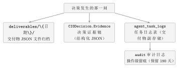

第十章黑匣子：怎么证明这个决策不是瞎猜的？
10.1亏钱那天，你能查到什么
我先不说“可解释性”这三个字，先请你做一个动作。 想象某一天收盘，你打开账户，发现是亏的。亏得不多，但亏得莫名其妙——因为按你的理解，那天市场看起来还行。 现在请你打开这套系统，回答下面五个问题：- 那天它看到了什么？
- 那天它判断是什么？
- 那天谁不同意它？不同意在哪里？
- 那天它本来想下多少注，最后实际下了多少？
- 那一笔买入，是哪个信号让它下的单？
sources 字段里逐维度写着数字从哪来——同一天的情绪维度写着“涨停 36／跌停 15／炸板率 33%（炸板 18）”，技术维度写着“MA20\(=\)3936.8 MA60\(=\)3944.7”。
也就是说：“那天它看到的是真实数据，而不是编的”这句话，是可以被逐条核对的。这正是本章要讲的整套机制。
飞机上那个橙色盒子，学名叫飞行记录仪。它有两个通道：一个记录仪表读数，一个记录驾驶舱里的对话。
它设计上有一个关键特征：它是被撞不坏、烧不坏的。因为设计者早就知道，它唯一被需要的那一天，正是飞机最惨的那一天——那天别的记录都可能没了，只有它必须留下。
手术记录单是另一个版本的故事。一台手术结束后，医生要写一份记录：术前诊断是什么、切开了哪里、发现了什么、做了什么处理、谁签的字。
这两样东西有一个共同点：它们不是“事后总结”，它们是过程本身的副本。写它们的时刻，就是事情正在发生的时刻；一旦写完，它就不再依赖任何人的记忆。
10.2没有它，会坏在哪
“留痕”这件事，听起来像行政要求，不像技术设计。我一开始也是这么想的，直到我把“不留痕”的代价一条一条列出来。 第一条：你分不清“想错了”和“做错了”。一个决策的链条很长——看到什么、判断什么、谁反对、折算成多少仓位、下多少单。如果只知道结果，那么“亏了”这件事至少对应三种完全不同的病因：判断错了（认知问题）、折算错了（参数问题）、执行错了（工程问题）。三种病因的修法毫不相干。没有证据链，你连去修哪一个都不知道。 第二条：你会不由自主地编理由。这是最危险的一条，而且它发生在你身上，不发生在系统身上。人有一种很强的本能：事后回头看一个结果，会自发地给这个结果配一个通顺的解释，然后把这个解释当成“当时就是这么想的”。假如证据是事后补录的，那这份记录就天然被这份解释污染过，它就不再是证据，而是辩护词。 第三条：说不清“这一单凭什么”。买一只股票，可能是策略信号让它买的，也可能是因子模型选的，也可能是 AI 自己偏好的。这三条路的责任归属完全不同。如果订单上不写明来源，事后就只能靠猜。10.3一个差不多对的模型：写日志
我最初的做法符合直觉：把关键动作写进日志文件。每做一件事就写一行，出错也写一行。 这个模型抓住了最本质的东西——有记录比没记录强。它在排查“程序有没有跑”“哪一步报错了”这类问题时非常有效，前面第 第九章 章那次闪退的排查，用的就是它。 但作为“决策证据”，它有四个致命的不足。 不足一：它是给机器读的，不是给结论读的。一行日志通常只有一个维度：时间、级别、一句话。而一个决策有十几个维度（方向、信心、反对意见、净多分、仓位折算……）。把这些挤进一行文本里，读的人要自己拿正则表达式去拆。 不足二：它是碎的。证据分散在几十行里，中间还夹着行情刷新、缓存命中之类无关的输出。要回答“谁否了谁”，你得像拼图一样把相关的几行挑出来，还得保证没挑漏。 不足三：它可能被冲掉。日志有滚动策略（这套系统里审计日志默认保留 \(180\) 天）。你三个月后想复查一次决策，那条记录可能已经不在了。 不足四——也是最要命的一条：它和你什么时候写，是两件事。日志可以在决策之后补写。只要补写的可能存在，“记录被事后解释污染”这个风险就永远在。 补上这四条，模型就变成了本章的严谨版本：在决策发生的那一瞬间，把证据序列化成结构化的对象，和决策结果写进同一条记录里，并且不依赖你事后去回忆任何东西。 这个模型失效在哪里？在于它保证不了“证据链是完整的”。它可以保证“已经写下来的那些是真实的、同刻的”，但保证不了“该写的都写了”——如果某个环节忘了往证据里塞一个字段，那个字段就是空的，而且没人会报警。所以这套机制能挡住的，是“事后编理由”和“事后查不到”；挡不住的，是“当时就没记”。想清楚这一点，你才知道该定期去翻那些字段，看它们是不是常年为空。10.4它在系统里长什么样
先说决策记录本身。每一次 CIO 决策，都带一个证据对象，字段名是Evidence，类型叫 decisionProposalPayload，定义在 internal/cio/proposal.go。表 10.1 是它的字段清单。
| 字段 | 它回答的问题 |
market_direction / market_read | 它当时怎么看的，一句话解读是什么 |
suggested_position_rate / effective_position_rate | 它想下多少注；最后实际生效多少 |
governed_by_sixdim | 这次是不是被六维判势压下来的 |
preferred_stocks / confidence / conclusion | 它看好谁、有多确信、总结说了什么 |
skeptic_verdict / skeptic_concerns | 谁否了它，否在哪几条具体风险上 |
debate（方向 / 多 / 空 / 共识度 / 总结） | 多空两边各自摆出了什么论据 |
kelly_position_scale | 共识与信心折算成的那个折扣系数 |
ensemble（方向 / net_score / votes） | 四路来源各自怎么表态、净多分多少 |
feedback | 上一次结算之后的真实战绩，作为这次决策的输入之一 |
evidence[] / generated_at | 当时看到的原始输入清单，以及这些结论生成的时刻 |
系统源码 internal/cio/proposal.go，结构体 decisionProposalPayload；字段随 CIODecision.Evidence 持久化；核对时间 2026-09-24。
attachProposal 里：它把主张、异议、辩论、Kelly 系数、集成结果，以及盘前采集的那份输入清单，一起塞进 decision.Evidence。在这之前，buildEvidenceLines 已经先把“当时看到了什么”整理成了一份清单——日期、六维判势摘要、组合快照、回撤等级、风控摘要、因子候选、历史反馈。这份清单在任何判断发生之前就准备好了，这也是它能当证据的原因。
再往上一层，是两条合规防线。它们都只拦买入，这一点很重要，下面会专门讲。
防线一：股票池白名单，而且是“失败即拒绝”。任何自主建仓的买入订单，都要先过一遍可交易股票池（tradeable_stocks）。不在池里的标的，一个不留地剔除：
internal/cio/cio.go）allowed := c.tradeablePoolBuyableCodes()
if len(allowed) == 0 {
log.Println("[CIO] 可交易股票池为空，拒绝基于多因子的自主建仓（白名单强制）")
return orders // 池子空 → 一笔都不下
}
for _, s := range topStocks {
if allowed[normalizePlanCode(s.Code)] {
poolFiltered = append(poolFiltered, s)
} else {
log.Printf("[CIO] 白名单剔除: %s(%s) 未在可交易股票池，禁止买入", s.Name, s.Code)
}
}if。池子是空的、或者读池子失败了，系统做的事情不是“先按默认买几只”，而是一笔都不下。这种设计有个专门的名字，叫 fail-closed（失败即关闭）——拿不准的时候，选择“不动”，而不是选择“按常识猜一个”。
把池子交给程序自己维护，它会在读不到的时候放行；把池子建成白名单，它就会在读不到的时候拦住。这两种选择的区别，就是“一次事故”和“永远不会因为这个原因出事”的区别。
防线二：每一笔买入都要写清信号来源。订单结构 OrderIntent 里有一个字段 signal_source（internal/port/agent.go），每笔买入订单都会被标注它是被哪个信号驱动的，并且这个来源还会被写进订单的理由文本里——形如“因子优选买入某某（代码）某某股@某某（复合得分\(=\)某某，信号来源\(=\)某某）”。同一天里的加仓订单，同样带这个字段。

deliverables/{日期}/，文件命名形如 YYYYMMDD_HHMMSS_DELIVERABLE_TYPE_交付物名称.json；另一个是 SQLite 的 agent_task_logs 表，对应字段是 deliverable_type、deliverable_name、deliverable_data。为什么要存两份？文件适合“翻出来看”，数据库适合“查和筛”。一份记录如果只有文件，你三个月后想按类型找它就得靠文件名猜；只有数据库，你又没法把原始 JSON 直接递给别人。
审计日志。系统里有一个统一的审计服务（internal/audit/service.go），处理的是操作级的留痕：谁在什么时候做了什么、结果如何。它的工程细节都是围绕“必须记下来”设计的——写入走异步批量（批量上限 \(100\) 条、每 \(5\) 秒刷一次），不阻塞主流程；写入失败最多重试 \(3\) 次；日志默认保留 \(180\) 天，每 \(24\) 小时清理一次过期记录；重要的操作走同步写入版本，确保落库成功才继续。它按业务场景分了很多入口：选股、投资规划、回测、AI 分析、CIO 每日复盘、配置变更、实时活动等等，并且提供了带筛选和分页的查询接口。
过程透明度。还有一份更细的记录，专门描述“一次会话里发生了什么”：internal/transparency/tracker.go 里的 SessionTransparency，包含三个数组——data_sources（这一轮读了哪些数据源、成功还是失败）、algorithm_records（跑了哪些算法、输入输出各是什么、耗时多少毫秒）、decision_steps（第几步、哪个角色、做了什么动作）。它的价值在于把“结论”和“结论的原料”分开存：Evidence 存的是结论侧的证据，这份存的是数据与算法侧的流水账。
最后，这些记录是被消费的——不然存了也没意义。CIO 页的决策日志（GetCIOJournal）会把每条决策渲染成一张卡片，里面包含【多空辩论】区块和【多提案集成】区块。也就是说，第 第六章 章那条“看多 3 条、看空 2 条、共识 61”、和第 第八章 章那条“净多 \(-100\%\)、来源 主张\(=\)看多、异议\(=\)RISK、辩论\(=\)看空、规则\(=\)看空”，就是从这里读出来的。你怎么读它，和系统怎么记它，是同一件事。
10.5常见误解与纠偏
这是我想得最久、也错得最久的一条。
我一开始以为，“可解释”指的是：决策做完了，系统能给我一段人能看懂的理由。按这个标准，一套写得漂亮的总结文字就够了。
后来我发现这个标准毫无意义。因为一段“说得圆的理由”，在决策正确时和错误时都一样圆。它是为读者服务的，不是为调查服务的。
真正的标准应该换成这样一句话：证据必须在决策发生的那一刻就已经存在，而不是在你想看的时候才被生产出来。用系统里的话说：
buildEvidenceLines 在任何判断之前运行，attachProposal 把结果和证据写进同一条记录，两者之间没有“等一会儿再补”的空间。
为什么这一点不能妥协？因为一旦允许事后补，“证据”就退化成了“叙述”，而人对叙述有一种很强的加工本能——你会不自觉地把结果合理化。第 第八章 章讲的那个“净多分 \(0\) 到底是没有来源还是激烈对冲”，一旦允许事后补记录，你就会永远得到一个对自己有利的答案。
看代码很容易产生这个印象：白名单卡的是买入订单，
signal_source 标的也是买入订单；而卖出那一侧，几乎没有什么东西拦它。这不是“管一半漏一半”吗？
这个不对称是刻意的，而且是一条贯穿全书的纪律：离场永远比进场更该被放行。
理由很朴素。买入是“增加风险敞口”，它的最坏情况是“多了一个你本不该有的仓位”——这个错误可以等一天、可以下不为例。而卖出是“减少风险敞口”，尤其在被止损、被熔断、市场转弱这些情形下，晚一小时都是实打实的损失。如果让白名单去管卖出，那么“这只股票被移出池子”就会变成一个“不能卖出”的理由——你想把风险赶出去，白名单反倒把门锁上了。
同样的不对称在前面的章节里已经出现过两次：第 第十九章 章会讲的六维仓位系数只缩放买入订单、不缩放卖出订单；第 第八章 章的集成投票只往下压仓位上限、从不往上抬。它们都是同一句话的不同写法：所有约束的作用方向都必须指向“更少风险”，而不能顺手把出口也堵上。
“系统有日志”和“系统可审计”，是两种东西。
这套系统里，这两者的差距可以被一个具体的问题量出来：那天谁否了谁？
日志能告诉你“风控审查通过了”“决策完成了”。但它回答不了上面的问题——因为答案藏在两个具体的字段里：一个是
skeptic_verdict（异议审查官的表态是 AGREE、CAUTION 还是 RISK）加上 skeptic_concerns（它到底担心哪几条），另一个是 ensemble 里的 votes（四路来源各自投了什么）。这两个字段如果没被单独存下来，而是被揉进一句“综合各方意见后决定”的总结里，那么这个决策在事后就变成了不可审的——你能证明它做过了，不能证明它想过了。
所以“可审计”的门槛不是“有没有记录”，而是：能不能在不依赖任何回忆和推断的前提下，回答“谁不同意、不同意在哪”。
10.6真实出处与动手试一试
- 决策证据链结构
decisionProposalPayload与写入动作attachProposal：internal/cio/proposal.go；随CIODecision.Evidence持久化。 - 决策前采集的输入清单
buildEvidenceLines：同文件。 - 股票池白名单与失败即拒绝：
internal/cio/cio.go，函数generateBuyOrdersFromFactors，白名单来源函数tradeablePoolBuyableCodes；池数据表tradeable_stocks。 - 买入订单的信号来源字段
signal_source：internal/port/agent.go，结构OrderIntent。 - 操作级审计服务：
internal/audit/service.go，结构AuditService（批量写入、重试、保留期与清理）。 - 过程透明度记录：
internal/transparency/tracker.go，结构SessionTransparency与Tracker.StartSession。 - 交付物双存储：文件目录
deliverables/{taskDate}/与 SQLite 表agent_task_logs（deliverable_type/deliverable_name/deliverable_data）。 - 前端消费：CIO 页决策日志（
GetCIOJournal）与【多空辩论】【多提案集成】区块，ui/src/pages/CIO.tsx。 - 真实判势证据样本：
market_sixdim_daily表（含逐维度的sources字段）。
动手试一试（二十分钟）
- 打开系统，进入首席投资官（CIO）页，把决策日志往下翻，找一条带完整证据的决策。
- 在这一条里，按表 10.1 逐个找字段：方向、建议仓位、实际生效仓位、异议表态、辩论共识度、Kelly 系数、集成净多分。
- 试着用它回答本章开头那五个问题。答不上来的那个，就是你想再要一个字段的地方。
- 换到设置 \(\to\) 审计日志页，查一查这段时间里发生过哪些操作级事件。
- 最后打开安装目录的
deliverables/文件夹，找一个日期目录，看里面有多少个 JSON——数一数，和你刚刚在决策日志里看到的任务数对不对得上。
10.7这一部分的收尾：他们到底在算什么
第一部分到这里就结束了。我们现在可以回过头，把第 第一章 章那个问题再回答一次。 那个问题是：一个人，怎么假装自己有一支投资团队？ 十章的答案拼起来是这样的： 先分工——把“看市场、找机会、做研究、选股、回测、控风险、管组合、交易、复盘”这九件事，拆成五个岗位（第 第一章 章）。 再定权——每条权力边界都写进代码里的权限表，尤其把“否决”这一票单独交给一个角色（第 第二章 章）。 然后签合同——每一次派活都有明确的输入、禁止项、产出格式、停止条件，连“我答不上来”都有专门的拒答码（第 第三章、第四章 章）。 接着排班——用市场自己的时段当节拍器，什么时间谁在岗（第 第五章 章）。 让他们吵——把反对意见交给另一个视角产生，而不是让同一个模型自我怀疑（第 第六章 章）。 只许往下调——所有角色的意见都只能把仓位压小，不能抬高（第 第七章 章）。 有事投票——四路来源折成一个可核对的净多分，缺票就少投，绝不补假票（第 第八章 章）。 打不死——AI 失联退回规则、阶段失败不中断、进程不许静默消失（第 第九章 章）。 留得下——决策发生的那一刻，把看到了什么、想了什么、谁否了谁，一起写进记录（本章）。 所以答案不是“AI 很聪明”。答案恰恰相反：第一部分的一句话总结
一个人假装有一支团队的办法，不是找到了五个聪明的 AI，而是把分工、权限、契约、证据、容错和诚实，一条一条写进了代码里。
智能体是这套制度的执行者，不是它的替代品。
智能体是这套制度的执行者，不是它的替代品。